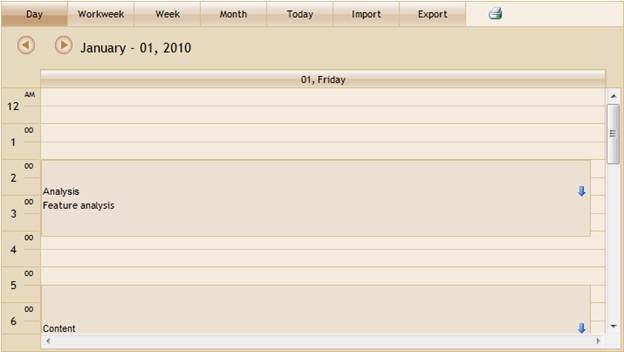
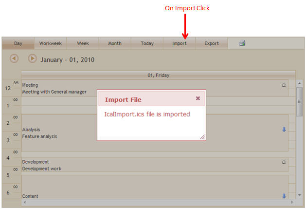
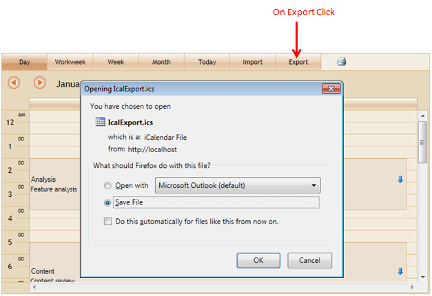

Appointments can be exported from and imported to Schedule, in an internet calendar file (*.ics) format using this feature. This way the portability of appointments is enhanced.
The following figure gives you an overview of imported appointments in Schedule:

Figure 144: Schedule with ICal import and export
The following figures give you a basic idea of the appearance of the output of the feature.

Figure 145: Import Appointment

Figure 146: Appointment Export
Use Case Scenarios
This feature allows you to share your appointments by enabling you to import and export appointment files.
You can also import appointments on loading Schedule.
|
Property |
Description |
Type of property |
Value it accepts |
Dependencies |
|
ShowImport |
This property is used to show the import icon in Schedule |
bool |
True False |
NA |
|
ShowExport |
This property is used to show the export icon in Schedule |
bool |
True False |
NA |
|
ImportFile |
This property is used to get the file name to import on load. |
string |
File name |
NA |
|
ImportedAppointments |
This property returns the List of Imported schedule appointments |
List<ScheduleAppointment> (i.e. AppList) |
Function with argument List<ScheduleAppointment> |
Depends on the Controller method— The AppList returns its values to the Controller method |
Methods
|
Name of the method |
Parameters of the method |
Return type |
Descriptions |
|
ScheduleImportActions<T> |
Import FileName |
ActionResult |
This method Import all appointment from the given file name |
|
ScheduleExportActions<T> |
Export FileName |
ActionResult |
This method Export all appointment from the schedule to given file name |
Events
|
Name |
Description |
Arguments |
Reference Links |
|
ActionBegin |
This event is triggered when an action begins. |
Events |
NA |
|
ActionSuccess |
This event is triggered on the success of an action. |
Events |
NA |
 Adding ICal Export and Import Support to
Schedule
Adding ICal Export and Import Support to
Schedule